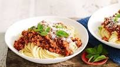

Home
Spaghetti Bolognase

Prep time: 1hr
Cooking time: 3hrs 10mins
Italian - A warm dish usually made with mince tossed in a bolognase sauce that is then mixed through spaghetti pasta and topped with parmesan cheese.
Ingredients
For the meat sauce
- 3 tbsp olive oil
- 2 celery sticks, finely chopped
- 1 onion, finely chopped
- 1 carrot (about 100g), finely chopped
- 3 garlic cloves, crushed
- 140g cubetti di pancetta
- 500g beef mince (we used 10% fat)
- 500g pork mince or British veal mince
- 200ml milk
- 2 x 400g cans chopped tomatoes
- 2 bay leaves
- 1 rosemary sprig
- 2 thyme sprigs
- 2 tsp dried oregano
- 2 beef stock cubes
- 500ml red wine
For the pasta
- about 400g dried spaghetti pasta
- 50g parmesan, finely grated
Method
- For the meat sauce, put the oil, celery, onion, carrot, garlic and pancetta in another large saucepan. Gently cook together until the veg is soft but not coloured.
- Tip in the beef and pork mince, the milk and chopped tomatoes. Using a wooden spoon, stir together and break up and mash the lumps of mince against the sides of the pan. When the mince is mostly broken down, stir in all the herbs, the stock cubes and the red wine, and bring to a simmer. Cover and cook for 1 hr, stirring occasionally to stop the bottom catching.
- Uncover and gently simmer for another 30 mins-1 hr until the meat is tender and saucy. Taste and season.
- Stir in the strained milk, a little at a time – the mix will thicken at first to a doughy paste, but keep going, adding milk gradually to avoid lumps. Bring to a gentle simmer, stirring constantly (if you have lumps, give it a quick whisk). Gently bubble for a few minutes until thickened. Season with salt, pepper and a good grating of nutmeg.
- Cook the pasta and serve meat sauce on top - garnish with grated parmesan cheese.